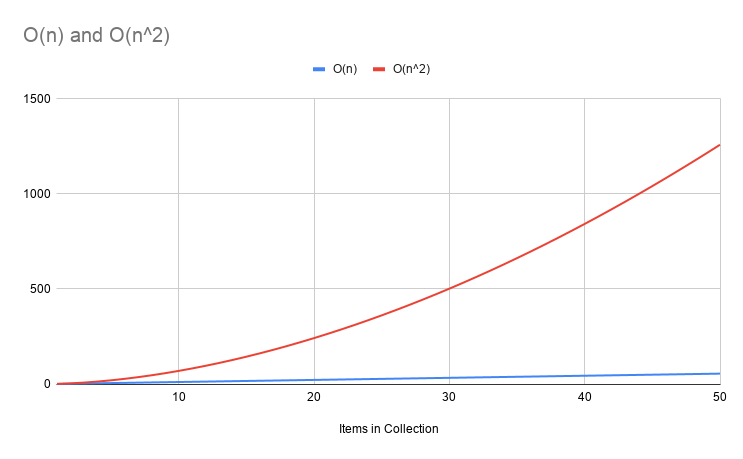
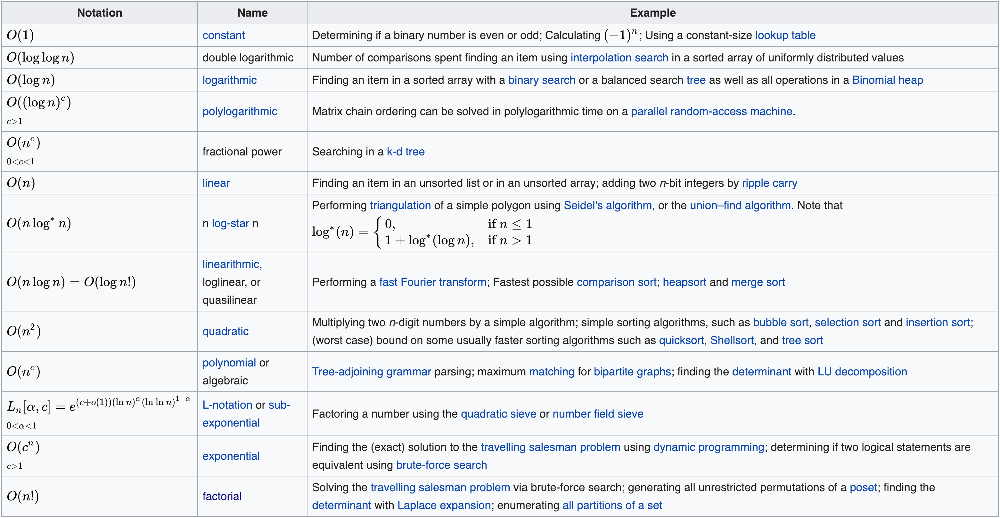

# INFO 450 Fall 2020 <div style="text-align:center;font-size: 1.5;line-height:1.8em;">Week 10</div> <div style="text-align:center;font-size: 1.5;line-height:1.8em;">Oct 22, 2020</div> --- # Agenda 1. Problem Solving 2. Homework Review 3. Data structures 4. Big O / Complexity 5. Sorting --- # More Problem Solving * Let's continue to figure out 'how' to program logic, not just the programming part. --- # Instructions Your roommate has invented a really cool robot. Yes, a REAL robot that does things at your command! This robot is super smart and is instructed by interacting with the human voice. No programming required! The robot can understand simple instructions. Grab something, turn something, squeeze, punch, lift, all kinds of commands. If I wanted the robot to do a jumping jack, I'd tell it something like: <quote>Robot, start with your hands at your sides and your feet together. Then, jump up and spread your legs until your feet are 18 inches apart while you're raising your arms to the side until they're at a 45 degree angle to your shoulers. Reverse the motion to your starting point, then repeat 10 times</quote> Professors note: I don't think those instructions are detailed enough, but hopefully you get the point. --- # Oh dang. I'm hungry Can anyone make me a peanut butter and jelly sandwich? * Everyone take 10 minutes * Use notepad, email, piece of paper, whatever * Write down your instructions * I will randomly pick people to read their instructions * We will all critique them. --- # Homework Review Two approaches to solutions: * Brute Force * Smart Math Patterns --- # Data Structure List Queues Stacks --- # Lists * Linear list of objects/values. * Size of the list is unknown, vs an array of a fixed size. * We covered these extensively ```python my_list = [] my_list.append("one") my_list.append(2) my_list.append("foo") for x in my_list: print(x) ``` --- # Queue Standing in line at a roller coaster. First in, first out (FIFO) ## This is a slow implementation, but using concepts we know already ```python my_queue = [] my_queue.append("first") my_queue.append("second") my_queue.append("third") my_queue.append("fourth") print(my_queue.popleft()) print(my_queue.popleft()) print(my_queue.popleft()) print(my_queue.popleft()) ``` --- # Better implementation Professor note: pronunced 'deck', double ended queue Collections package, deque object ```python from collections import deque queue = deque() queue.append("first in") queue.append("second in") queue.append("third in") print(queue.popleft()) print(queue.popleft()) print(queue.popleft()) ``` --- # Stack First in, Last Out (FILO) Last In, First Out (LIFO) * Coins in the car coin slot holder. * Text editor, undo function ```python my_stack = [] my_stack.append("first in") my_stack.append("second in") my_stack.append("third in") print(my_stack.pop()) print(my_stack.pop()) print(my_stack.pop()) ``` Traditional methods for stacks: push, pop --- # Big O Complexity of an algorithm We use Big-O notation to asymptotically bound the growth of a running time to within constant factors above and below. Sometimes we want to bound from only above. Asymptotic: so defined that their ratio approaches unity as the independent variable approaches a limit or infinity. (CHF: I liked this one the best) What the heck does this mean? In programming, we measure the efficiency of an algorithm on a collection of data, in relation to the number of items in the collection. --- # Example Consider a sorting algorithm on an array: ```python my_numbers = [5,1,6,3,2] ``` There are 5 elements in the array. We write a sorting algorithm that puts them in the correct order, and it takes 5 units of time. (computers are fast, so this could be 5 \* 100 nanoseconds, 5 \* 1 second, whatever. That is why we talk about "units of time". --- # Now what? ```python my_numbers = [5, 1, 6, 3, 2, 8, 3, 7, 8, 2] ``` Now we are up to 10 items in our array, or double the number of items. We measure the efficiency of our algorithm by the units of time, or set of operations, that get executed dependant on the number of items in the array. In this case, if the 10 elements take 10 units of time, then we know our algorithm has a linear relationship to the number of elements. This is labeled as O(n). Where O is the notation of complexity, and <strong>n</strong> represents the linear relationship. This is similar to plotting x=y on a graph. --- # Can it be worse? Using the same 10 items in our array, if we plot the time to sort the algorith, and we see an exponential relationship, then we have a problem. The Red line indicates O(n<sup>2</sup>)  --- # List of Big O Complexities  Source: https://en.wikipedia.org/wiki/Big_O_notation --- # Sorting * Bubble Sort * Selection Sort * Merge Sort --- # Bubble Sort O(n^2) <a href="https://www.youtube.com/watch?v=nmhjrI-aW5o" target="_blank">Video</a> <a href='bubble.py' target="_blank">Bubble Sort</a> <a href="https://en.wikipedia.org/wiki/Bubble_sort" target="_blank">Wikipedia: Bubble Sort</a> --- # Bubble Sort (code) ```python import random def bubble(inbound): outbound = inbound.copy() n = len(outbound) for i in range(n): for j in range(0, n - i - 1): if outbound[j] > outbound[j + 1]: outbound[j], outbound[j+1] = outbound[j + 1], outbound[j] return outbound if __name__ == "__main__": my_list = [] for x in range(20): my_list.append(random.randint(0, 1000)) print(my_list) sorted_list = bubble(my_list) print(sorted_list) ``` --- # Selection Sort O(n^2) <a href="https://youtu.be/xWBP4lzkoyM" target="_blank">Video</a> <a href="selection.py" target="_blank">Selection Sort</a> <a href="https://en.wikipedia.org/wiki/Selection_sort">Wikipedia: Selection Sort</a> --- # Selection Sort (Code) ```python import random def selection(inbound): outbound = inbound.copy() for i in range(len(outbound)): min_idx = i for j in range(i + 1, len(outbound)): if outbound[min_idx] > outbound[j]: min_idx = j outbound[i], outbound[min_idx] = outbound[min_idx], outbound[i] return outbound if __name__ == "__main__": my_list = [] for x in range(20): my_list.append(random.randint(0, 1000)) print(my_list) sorted_list = selection(my_list) print(sorted_list) ``` --- # Recursion <strong>Recursion</strong> is the process of defining something in terms of itself, circular definitions. e.g. <i>A circle is defined as something circular in shape</i> In programming (not just C++), recursion is the process of a function calling itself. A function that calls itself is said to be <strong>recursive</strong>. --- # Classic Factorial Example The factorial of a number <i>N</i> is the product of all the whole numbers between <i>1</i> and <i>N</i> For Example, 4 factorial is 1x2x3x4 = 24 Let's compare the 'iterative' implementation of factorial to the recursive implementation --- # Iterative Implementation ```python def fact(n): if n <= 0: raise Exception("Can't factorial a number less than 0") answer = 1 for x in range(1, n + 1): answer *= x return answer if __name__ == "__main__": for x in range(1, 21): print(f"Factorial of {x} is {fact(x)}") ``` <a href="fact.py" target="_blank">Iterative Factorial</a> --- # Recursive Implementation ```python def recursive_fact(n): if n <= 0: raise Exception("Can't factorial a number less than 0") if n == 1: return n answer = recursive_fact(n - 1) * n return answer if __name__ == "__main__": for x in range(1, 21): print(f"Recursive Factorial of {x} is {recursive_fact(x)}") ``` <a href="recursive_fact.py" target="_blank">Recursive Factorial</a> --- # Breaking it down recursive_fact is the function with an integer ```python def recursive_fact(n): ``` Quick business rule, can't factorial a number less than 0 ```python if n <= 0: raise Exception("Can't factorial a number less than 0") ``` CRITICAL to <strong>ALWAYS</strong> have an 'exit' point of a recursive function, otherwise, you'll hit an infinite loop, blowing your stack ```python if n == 1: return n ``` The recursion. call factr with one less than n. Which will then call factr with another one less than n, until n is 1. Then, returns it to by multipled against the 'next' number ```python answer = recursive_fact(n - 1) * n ``` Return the answer ```python return answer ``` --- # Merge Sort Divide and Conquer O(n log n) Better than O(n^2) <a href="https://www.youtube.com/watch?v=JSceec-wEyw" target="_blank">Video</a> <a href="merge.py" target="_blank">Merge Sort</a> <a href="https://en.wikipedia.org/wiki/Merge_sort">Wikipedia: Merge Sort</a> --- # Merge Sort ```python import random def merge_sort(inbound): if len(inbound) >1: mid = len(inbound)//2 # Finding the mid of the array left_array = inbound[:mid] # Dividing the array elements right_array = inbound[mid:] # into 2 halves merge_sort(left_array) # Sorting the first half merge_sort(right_array) # Sorting the second half i = j = k = 0 # Copy data to temp arrays left_array[] and right_array[] while i < len(left_array) and j < len(right_array): if left_array[i] < right_array[j]: inbound[k] = left_array[i] i+= 1 else: inbound[k] = right_array[j] j+= 1 k+= 1 # Checking if any element was left while i < len(left_array): inbound[k] = left_array[i] i+= 1 k+= 1 while j < len(right_array): inbound[k] = right_array[j] j+= 1 k+= 1 if __name__ == '__main__': my_list = [] for x in range(20): my_list.append(random.randint(0, 1000)) print(my_list) merge_sort(my_list) print(my_list) ``` ---